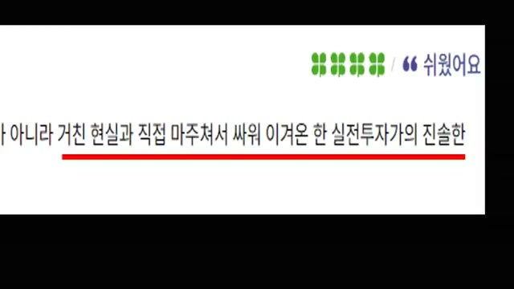
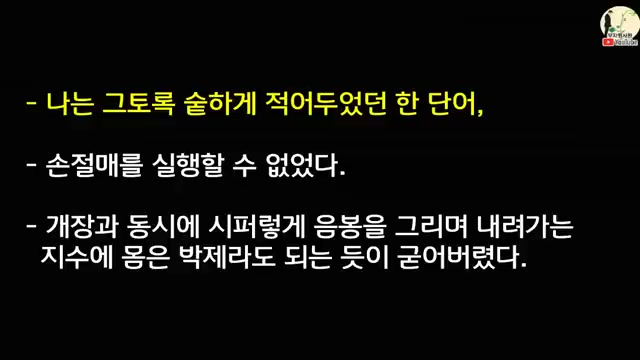
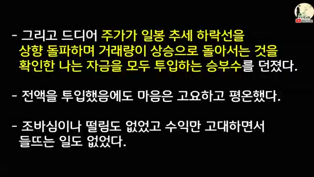
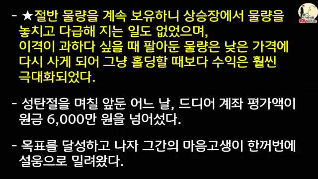
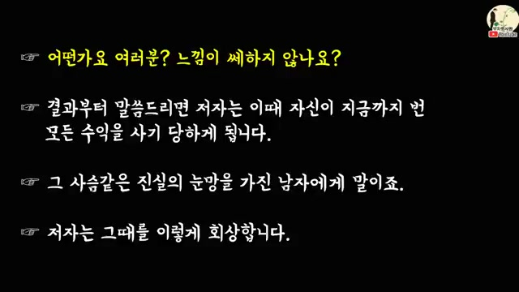
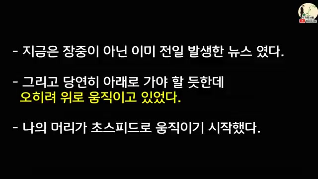
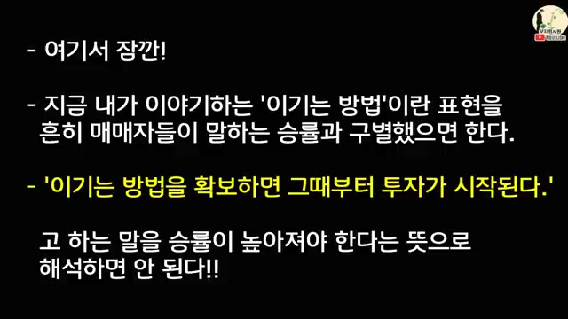
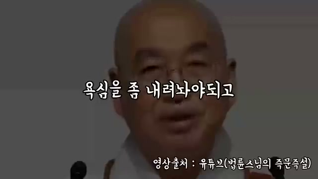

채널: wealthy office worker | 길이: 49:57 | 날짜: 20231210

초반 화면에는 책 문장 일부가 확대되어 있고, 빨간 밑줄로 “거친 현실과 직접 마주쳐서 싸워 이겨온 실전투자자”라는 취지가 강조된다. 진행자는 성필규의 문장을 단순한 동기부여가 아니라 실전에서 체득한 말로 다룬다. “승패를 운에 맡기지 말라”, “이겨놓고 확인하러 갈 뿐이다” 같은 표현은 멋있는 구호가 아니라 매매 구조를 만들라는 뜻으로 해석된다. 즉, 시장에 들어간 뒤 운 좋게 이기기를 바라지 말고, 진입 전부터 승부 조건을 정리해야 한다는 것이다.
세 번의 파산과 고통 뒤 성필규는 “패배한 사람이 어떻게 다시 성공할 수 있는가”를 묻는다. 그는 도서관에서 세계적인 투자자들의 전기와 회고록을 읽고, 기술적 분석과 가치 분석, 거시경제와 경기 흐름까지 공부한다. 그러나 영상은 공부를 신성시하지 않는다. 공부는 필요하지만, 실패 가능성을 외면한 지식은 상승장에서 자만으로 바뀔 수 있다고 지적한다.

초기에는 20일 지지선 붕괴를 보고 이론대로 분할 매도했지만, 이후 더 내려가는 지수를 “다시는 볼 수 없는 저점”으로 착각한다. 화면 문구처럼 그는 손절매를 실행하지 못하고, 시퍼렇게 내려가는 지수에 몸이 굳어버린다. 계좌 현금을 모두 투입한 뒤 11월 말 400포인트 붕괴를 맞았고, 시장 폐쇄설까지 돌 정도로 공포가 컸다. 이 구간은 “이론을 아는 것”과 “실제로 손실을 자르는 것”이 완전히 다른 문제임을 보여준다.
다시 매매를 시작한 뒤 성필규는 거의 기계적으로 원칙을 지켰다. 5일선이 깨지면 팔고, 매수가 대비 5% 손실이면 절반, 10% 손실이면 전량을 정리했다. 이 원칙은 수익을 크게 내는 기술이라기보다 망하지 않는 기술이다. 하락장에서도 살아남았고, 살아남았기 때문에 다음 큰 기회를 잡을 수 있었다.

계좌가 2,420만 원으로 불어난 시점, 아직 바닥이 확인되지는 않았지만 외국인 매수 기조 전환이 포착된다. 그는 역사적 저점이라고 단정하지 않고, 지수가 급반등하지 않을 가능성까지 고려한다. 그래서 한 번에 몰아넣기보다 50%, 25%, 25% 식으로 계획을 세운다. 화면에는 추세 하락선을 상향 돌파하고 거래량이 상승 전환되는 장면을 확인한 뒤 자금을 모두 투입했다는 문구가 강조된다.

상승장에서 절반 물량을 계속 보유하자, 성급하게 판 경우보다 수익이 훨씬 극대화되었다. 성탄절 전 계좌 평가액은 원금 6,000만 원을 넘어섰고, 그간의 고통이 설움처럼 밀려왔다. 여기서 영상은 “공부의 힘”을 언급하지만, 핵심은 단순한 지식보다 추세를 이해하고 버틸 수 있는 구조다. 상승장 조정은 20일선까지 밀리는 정도이고, 강한 저항 돌파 후 매수한 종목은 쉽게 버릴 대상이 아니라는 교훈도 나온다.
2000년 1월 1일 전후, 언론은 장밋빛 미래만 말했고 부정적 전망은 거의 없었다. 성필규는 모두가 한 방향을 볼 때 시장이 배신해왔다는 경험을 떠올렸고, 1월 4일 보유 종목을 모두 매도했다. 결과만 보면 탁월한 판단처럼 보이지만, 영상은 그가 당시 자신을 부끄럽게 묘사한다고 설명한다. 왜냐하면 이후에도 사건이 이어지며, 단 한 번의 적중이 진짜 실력을 의미하지 않는다는 사실이 드러났기 때문이다.

어떤 사람이 오래 검토한 저평가 종목을 함께 사 모으자고 제안했고, 성필규는 작전이냐고 물었다. 상대는 단지 좋은 회사가 저평가되어 있으니 함께 모으자는 것이라고 설명했다. 그러나 그는 무턱대고 사람을 믿고, 미수를 무분별하게 쓰고, 심지어 사채까지 빌리며 첫 파산을 겪는다. 화면은 “사기당했다”는 결과보다, 그가 “선한 눈”을 가진 사람 앞에서 자신의 모습이 한심해 보였다고 회상하는 심리를 강조한다.
파산 뒤 그는 강의로 겨우 재기한다. 이때 중요한 점은 자신의 물량을 수강생들에게 넘기지 않았다는 것이다. 즉, 돈이 급하다고 고객과의 신뢰를 깨지 않았기 때문에 다시 설 수 있었다고 고백한다. 영상은 투자 실력뿐 아니라 신뢰, 윤리, 관계 자본도 장기 생존의 일부라고 해석한다.

연평도 포격 뉴스가 장 막판 발생했을 때, 상식적으로는 시장이 급락해야 할 것처럼 보였다. 하지만 화면 문구처럼 이미 전일 발생한 뉴스였고, 가격은 오히려 위로 움직였다. 성필규는 머리가 초고속으로 움직이기 시작했고, 시스템상으로는 강한 매수 신호가 발생했다. 그는 “뉴스”가 아니라 “가격”과 “시스템”을 믿기로 했고, 결과적으로 큰 수익을 냈다.

진행자는 이 표현을 흔한 승률 이야기와 구분해야 한다고 강조한다. 이기는 방법을 확보해야 투자가 시작된다는 말을 “승률을 높여야 한다”로만 해석하면 안 된다. 실제 의미는 필연적으로 올 수밖에 없는 상황을 짐작하고, 다양한 분석 도구와 자기 기법으로 그 핵심에 접근한 뒤 실전에 임하라는 것이다. 즉, 싸우면서 이기는 것이 아니라, 이미 조건을 유리하게 만들어놓고 싸우라는 뜻이다.
성필규는 열 번 진입해 일곱 번 손절하는 것을 당연하게 여긴다. 중요한 것은 그 일곱 번의 손절에서 평가이익이 나지 않았다는 사실이 아니라, 손실이 제한되었다는 점이다. 그가 잡으려는 것은 작은 수익이 아니라 큰 추세다. 세 번의 큰 수익으로 모든 손실을 능가하는 방식이 그의 게임 법칙이다.
실패하는 투자자는 거래 승률에 지나치게 집착한다. 작은 수익을 실현하는 데는 민감하지만 손실을 자르는 데는 둔감하다. 그래서 작은 수익은 무수히 챙기면서도, 정작 큰 손실 하나와 큰 추세를 놓치는 일이 반복된다. 영상은 이런 구조가 투자 역사에서 반복된 진실이라고 말한다.

후반부는 투자 심리를 법륜스님 발언과 연결한다. 행복은 즐거움을 계속 추구하는 것이 아니라 괴로움을 줄이는 것이고, 건강은 특별한 쾌감이 아니라 아프지 않은 상태라는 식의 비유가 나온다. 성필규의 투자관도 마찬가지로, 수익을 추구하기보다 손실을 줄이는 것이 수익이라고 정리된다. 욕심, 고집, 성질을 내려놓지 못하면 즐거움 추구가 결국 고통으로 돌아온다는 결론이다.
“이겨놓고 승부하라”
“가격을 믿어야 한다”
“손실을 줄이는 것이 수익이다”
“투자를 즐겨라”
“괴롭지 않는 것이 행복이다”
이 영상은 “150만 원을 150억으로 만든 비법”을 단순한 성공 공식으로 제시하지 않는다. 오히려 세 번의 파산, IMF 급락장, 2000년 과열장, 사람을 믿고 레버리지를 쓴 실패, 연평도 포격 같은 비상식적 사건을 통해 투자자가 무엇을 통제할 수 있고 무엇을 통제할 수 없는지를 보여준다. 통제 가능한 것은 진입 전의 구조, 손절 기준, 자금 배분, 시스템 신뢰, 자기 성향 파악이다. 통제 불가능한 것은 뉴스, 군중심리, 단기 가격 변동, 운명처럼 보이는 사건이다.
실용적 시사점은 분명하다. 첫째, 자신의 투자 유형과 길을 먼저 정리해야 한다. 둘째, 시장의 게임 법칙을 파악하고, 이길 조건이 갖춰졌을 때만 진입해야 한다. 셋째, 승률보다 손익비와 손실 제한이 중요하다. 넷째, 가격과 시스템을 믿되, 그 시스템은 충분한 경험과 분석으로 검증되어야 한다. 마지막으로, 투자는 돈을 더 벌기 위한 흥분의 게임이 아니라 괴로움을 줄이고 오래 살아남기 위한 절제의 기술이다.
댓글
GitHub 이슈 기반 댓글 시스템입니다.